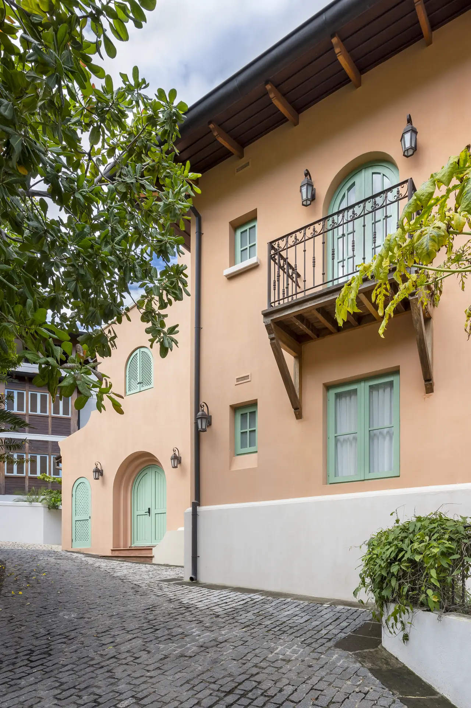
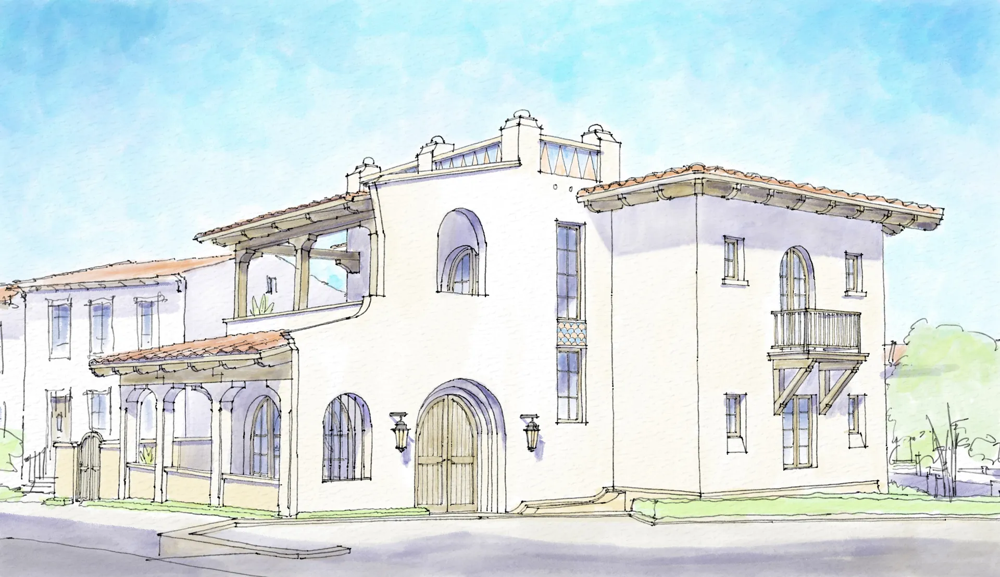
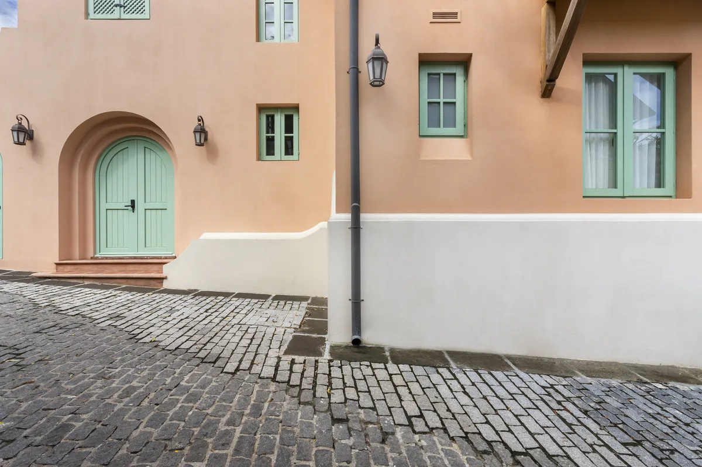
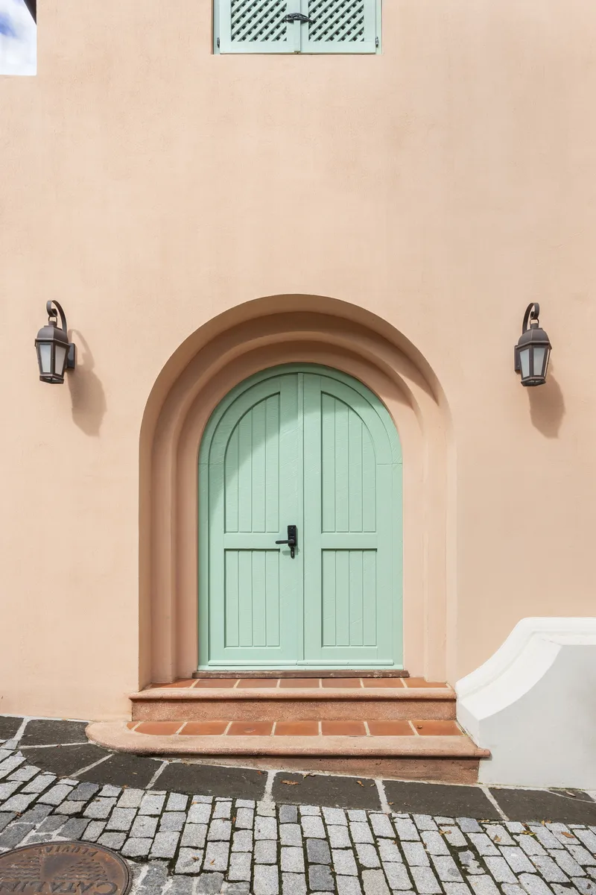
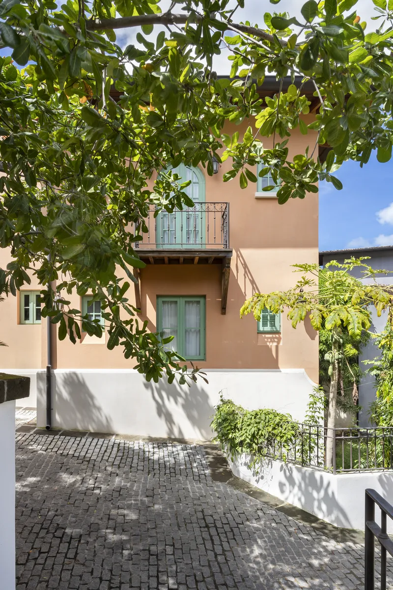
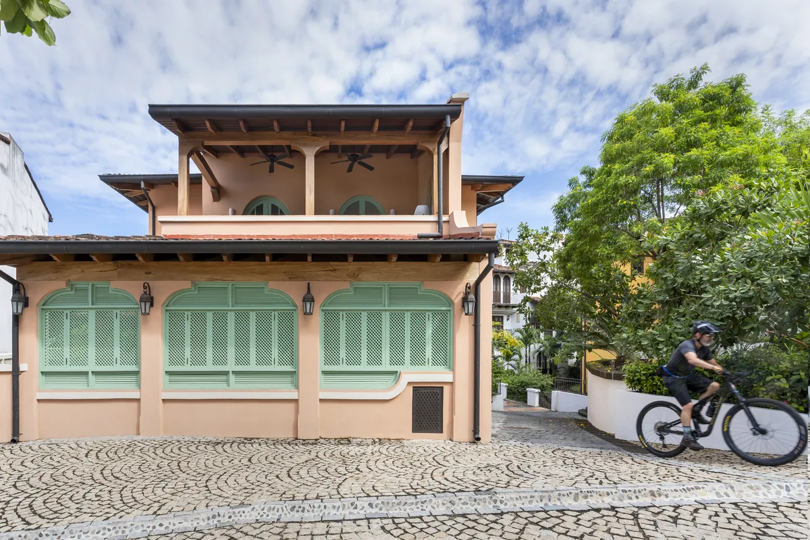

Custom House · 360 m²

Casa Curuba is a single-family residence within Las Catalinas, conceived as a direct response to its site and climate. Terraces, shade, and cross ventilation organize a daily life that unfolds between interior and exterior, in dialogue with the community’s coastal landscape.

The soft coral-orange of its walls — the colour of a curuba fruit milkshake — gives the house its warmth and its name. A large arched french door opens the main living space generously to the street, balancing privacy with engagement.

Two interior courtyards create private outdoor rooms; a pool and shaded pergola complete the outdoor living sequence.


Photography by Topofilia Studio.
Whether you’re envisioning a new community, a distinctive residence, or a transformative urban project, we’re here to help bring your vision to life.
Get in Touch